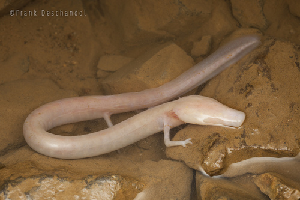

El olm (Proteus anginus) también conocido como proteo o pez humano, es una obra maestra de la evolución
en que se da un conjunto sin igual de adaptaciones a la vida cavernícola. Habita en las cuevas kársticas del centro
y sureste de Europa en total ausencia de luz. Es el tetrápodo cavernario más grande del mundo y el único anfibio europeo
que vive exclusivamente bajo tierra. Posee un cuerpo largo y delgado, y una cabeza grande aplanada que le permiten alojar
el número más grande posible de receptores sensoriales.
Tiene la apariencia de una serpiente a la que le han crecido unas tímidas extremidades, es translúcido y a diferencia
de la mayoría de los anfibios, los cuales pierden las branquias cuando alcanzan la madurez y salen del agua, posee branquias
y pulmones. Entre sus peculiaridades anatómicas adaptativas cabe destacar sus órganos sensoriales. Es que al vivir en ambientes
subterráneos, oscuros y acuáticos, la evolución ha facilitado en estas criaturas el desarrollo de sentidos no visuales.
CARACTERISTICAS:
- Es una especie la cual prefiere estar en la oscuridad.
- Se alimenta de pequeños crustaceos.
- Puede llegar a vivir hasta 100 años de vida.
- Es uno de los animales con las adaptaciones mas extremas del mundo entero.
- Puede pasar hasta 10 años sin alimentarse.

REGRESAR AL MENU